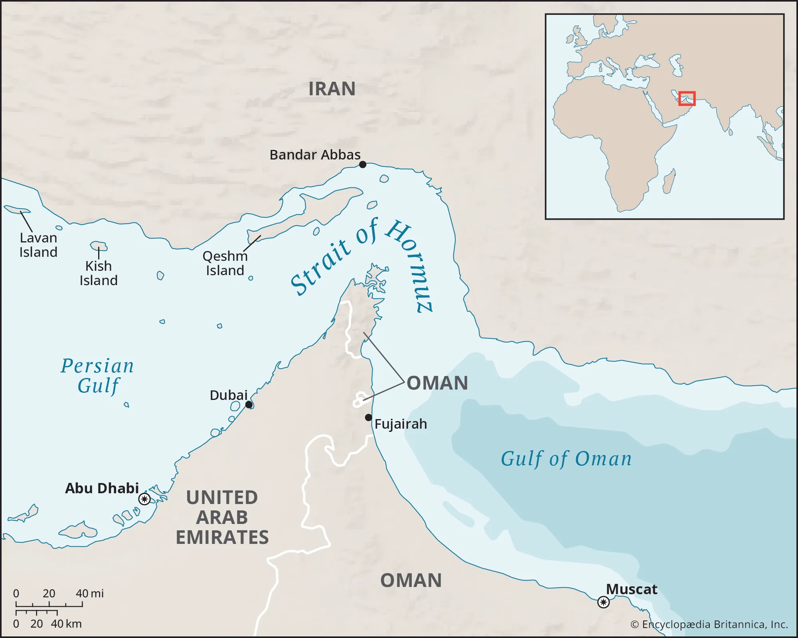

02 / MID · یادداشت Energy Notes
تنگهٔ هرمز؛ از مسیر نفت تا اهرم ارزی
خوانشی از یک مقالهٔ تحلیلی دربارهٔ اینکه چگونه کنترل یک گلوگاه انرژی میتواند به فشار بر مسیرهای پرداخت و نظم پترودلار تبدیل شود؛ بدون سادهسازیِ رقابت دلار و یوان به جانشینی فوری.

یک تنگه، دو نوع قدرت
تنگهٔ هرمز روی نقشه باریک به نظر میرسد، اما اهمیتش از عرض جغرافیایی آن بزرگتر است. این آبراه، تولیدکنندگان انرژی در خلیج فارس را به بازارهای دوردست وصل میکند و هر اختلال در آن میتواند همزمان بر کشتی، بیمه، قیمت و تصمیمهای دولتها اثر بگذارد. به همین دلیل، دربارهٔ هرمز معمولاً از «گلوگاه انرژی» حرف میزنیم.
مقالهٔ منبع یک قدم جلوتر میرود. پرسش آن فقط این نیست که چه کسی میتواند عبور کشتیها را دشوار کند؛ پرسش این است که اگر عبور از یک گلوگاه به نوع پرداخت هم گره بخورد، انرژی چگونه به اهرم مالی تبدیل میشود.
این روایت خوانشی از مقالهٔ Naim Tahir Baig است که در ۳۰ مارس ۲۰۲۶ بهروزرسانی شده است. ادعاهای منبع دربارهٔ جنگ، میزان عبور کشتیها، عوارض هرمز و قیمتهای بازار در این صفحه بهعنوان خبر مستقل یا واقعیتِ دوبارهسنجیشده ارائه نمیشوند. آنچه برای Energy Notes اهمیت دارد، چارچوبی است که مقاله برای پیوند میان مسیر انرژی، امنیت و پول پیشنهاد میکند.
منبع چه میگوید؟
نویسنده سه حرکت را کنار هم میگذارد: کنترل فیزیکی یک مسیر حیاتی، شرطگذاری برای عبور، و استفاده از زیرساخت پرداختی که خارج از مدار غالب دلار قرار دارد. در روایت مقاله، گزارشهایی از ایجاد یک نظام عوارض برای عبور از هرمز و پرداخت بخشی از آن با یوان، یک اتفاق صرفاً تجاری نیست؛ این رخداد بهعنوان آزمایشی برای تغییر «واحد تسویه» انرژی خوانده میشود.
مقاله برای این سازوکار عبارت فشار گلوگاهی یا chokepoint coercion را به کار میبرد. معنای آن ساده است: یک کشور برای تغییر رفتار طرف مقابل، فقط به تعرفه یا تحریم تکیه نمیکند؛ کنترل نقطهای را در اختیار میگیرد که زنجیرهٔ فیزیکی تجارت از آن عبور میکند. اگر این کنترل به شبکهٔ بانکی، بیمه و قراردادهای حمل متصل شود، فشار از سطح کشتی فراتر میرود و به تصمیم مالی شرکتها و دولتها میرسد.
این ایده به بحث ژئوپلیتیک نفت و گاز نزدیک است، اما یک لایهٔ اضافه دارد. در ژئوپلیتیک معمول، مسیر انتقال و قیمتگذاری موضوع اصلیاند؛ اینجا خودِ پولی که معامله با آن نهایی میشود هم وارد میدان میشود.
وقتی گلوگاه انرژی به اهرم پرداخت تبدیل میشود
عوارض عبور، در نگاه اول یک درآمد مستقیم است: کشتی هزینه میپردازد و اجازهٔ عبور میگیرد. اما اگر شرط پرداخت با یک ارز مشخص اعلام شود، همین هزینهٔ کوچک میتواند سه اثر دیگر داشته باشد.
اول، برای یک معاملهٔ واقعی نیاز به حساب، واسطه، نقدینگی و مسیر انتقال پول ایجاد میکند. دوم، شرکتهای کشتیرانی و صاحبان محموله را وادار میکند ریسک ارزی و حقوقی این مسیر را در تصمیم خود وارد کنند. سوم، اگر عبورهای بیشتری با همین الگو انجام شود، یک تجربهٔ موردی میتواند به عادت قراردادی تبدیل شود؛ یعنی در قراردادهای بعدی، ارز تسویه و مسیر پرداخت از ابتدا بخشی از طراحی تجارت باشد.
مقاله این زنجیره را از «پیشنهاد» تا «عملیات محدود» دنبال میکند و گزارش پرداخت چند عوارض با یوان را نشانهٔ مهمی میداند. با این حال، یک پرداخت یا چند عبور، بهخودیخود نظم پولی جهان را عوض نمیکند. اهمیت آنها در این است که نشان میدهند فشار فیزیکی بر مسیر انرژی میتواند بهسرعت یک انتخاب پولی را از سطح بحث سیاسی به سطح عملیات برساند.
کاربرد یوان با جانشینی دلار یکی نیست
یکی از نقاط قوت مقاله این است که میان «کاربرد تازهٔ یوان» و «جانشینشدن آن بهجای دلار» فاصله میگذارد. خود منبع، در جدول مقایسهٔ ساختاری، برتری دلار را در ذخایر ارزی، معاملات بازار ارز، پرداختهای سوئیفت و زیرساختهای تسویه یادآوری میکند. سهم کوچکتر یوان در این شاخصها یعنی چین برای تبدیل یک استفادهٔ منطقهای به یک نظام جهانی هنوز با موانع بزرگی روبهروست.
پس مسئله را نباید به شکل یک دوئل ساده دید: امروز دلار، فردا یوان. مسیر محتملتر میتواند چندپارگی تدریجی باشد؛ بخشی از تجارت انرژی همچنان با دلار انجام شود و در بخشی دیگر، بهویژه در معاملاتی که تحریم، امنیت مسیر یا نزدیکی سیاسی نقش پررنگ دارد، یوان و شبکههای پرداخت چین کاربرد بیشتری پیدا کنند.
این تفاوت مهم است. یک ارز برای جهانیشدن فقط به پذیرش سیاسی نیاز ندارد؛ باید بازار عمیق، نقدشوندگی، ابزار پوشش ریسک، اعتماد حقوقی و امکان بازگشت سرمایه هم داشته باشد. گلوگاه میتواند استفاده از یک ارز را تحمیل کند، اما بهتنهایی این زیرساختها را نمیسازد.
زیرساخت معامله مهمتر از شعار ارزی است
در بخش مربوط به چین و ایران، مقاله بر شبکهای از تجارت نفت، واسطههای حمل، پالایشگاههای مستقل و مسیرهای پرداخت تمرکز میکند. نکتهٔ تحلیلی این بخش آن است که «یوانیشدن» فقط به انتخاب علامت ¥ روی یک فاکتور محدود نیست. باید دید پول چگونه جابهجا میشود، چه نهادی آن را تسویه میکند، ریسک آن کجا مینشیند و آیا فروشنده میتواند درآمدش را دوباره به کالا، سرمایه یا ارز دیگری تبدیل کند.
به همین دلیل، زیرساخت پرداخت گاهی از خودِ نام ارز مهمتر میشود. اگر بانکها، واسطهها و سامانههای تسویه برای یک مسیر خاص آماده باشند، استفاده از آن مسیر آسانتر میشود. اما اگر طرفهای معامله نتوانند پول را بیمه، تبدیل یا در قراردادهای آینده پوشش دهند، یک پرداخت اضطراری الزاماً به تقاضای پایدار برای آن ارز تبدیل نخواهد شد.
از شوک کوتاهمدت تا تغییر ساختاری
مقاله از بحران هرمز بهعنوان یک نقطهٔ چرخش ساختاری یاد میکند، اما برای ارزیابی این ادعا باید دو افق را جدا کرد.
در کوتاهمدت، اختلال در مسیر میتواند هزینهٔ بیمه و حمل را بالا ببرد، کشتیها را معطل کند، خریداران را به مسیرهای جایگزین بفرستد و قیمت انرژی را تحت فشار قرار دهد. اینها اثرهای ملموس یک گلوگاهاند؛ حتی اگر هیچ تغییر دائمی در نظم پولی رخ ندهد.
در بلندمدت، تغییر ساختاری به تکرار نیاز دارد. باید قراردادهای بیشتری با ارز جایگزین بسته شود، بازارهای پوشش ریسک شکل بگیرند، بانکها و شرکتهای حمل آن را بپذیرند و دولتها مطمئن شوند که درآمدشان در پایان معامله قابل استفاده است. این مسیر آهستهتر از یک تصمیم سیاسی یا یک بحران خبری است.
از این زاویه، مقاله بیش از آنکه پایان پترودلار را اعلام کند، یک امکان را برجسته میکند: امنیت مسیرهای انرژی میتواند بر معماری پرداخت اثر بگذارد. این نکته با بحث تابآوری اقتصادی هم پیوند دارد؛ تابآوری فقط داشتن منبع داخلی نیست، بلکه توان جذب شوک در تجارت، زیرساخت و تصمیمهای مالی هم هست.
مرزهای این خوانش
منبع، جدول زمانی و نتیجههای خود را بر گزارشهایی از رسانهها، نهادهای دولتی و سازمانهای بینالمللی بنا میکند و نسخهٔ آن به ۳۰ مارس ۲۰۲۶ محدود است. در متن مقاله نیز دربارهٔ برخی آمار انسانی و میدانی اختلاف گزارشها دیده میشود. بنابراین نمیتوان همهٔ اعداد و رخدادهای ذکرشده را بدون بررسی مستقل، دادهٔ قطعی امروز دانست.
این محدودیت از ارزش تحلیلی مقاله کم نمیکند؛ فقط جای آن را روشن میکند. مقاله برای گزارش لحظهای بحران نوشته نشده، بلکه میخواهد نشان دهد یک اختلال در گلوگاه انرژی چگونه میتواند همزمان سه بازار را درگیر کند: بازار فیزیکی نفت، بازار خدمات و حملونقل، و بازار پرداخت و ارز.
جمعبندی
درس اصلی این خوانش، جانشینی فوری یوان بهجای دلار نیست. درس مهمتر این است که انرژی در جهان امروز فقط در چاه، پالایشگاه یا کشتی جریان ندارد؛ در قرارداد، بیمه، شبکهٔ بانکی و واحد حساب هم جریان دارد. هرجا یکی از این لایهها در معرض فشار قرار گیرد، لایههای دیگر نیز دوباره تنظیم میشوند.
تنگهٔ هرمز بههمین دلیل فقط یک مسیر عبور نیست. در سناریویی که مقاله ترسیم میکند، این آبراه به جایی تبدیل میشود که در آن قدرت فیزیکی میکوشد رفتار مالی را تغییر دهد. اینکه این تلاش به تغییر پایدار در نظم پولی برسد یا نه، به تعداد کشتیهای عبوری وابسته نیست؛ به تکرار معامله، اعتماد نهادی و توان ساختن یک مسیر جایگزین برای پرداخت بستگی دارد.
پس پرسش آینده فقط این نیست که نفت از کدام تنگه عبور میکند. باید پرسید در لحظهٔ بحران، چه کسی مسیر را کنترل میکند، چه کسی هزینهٔ عبور را میپردازد و پولِ این عبور در کدام شبکه باقی میماند.
منابع این روایت
- The Hormuz Gambit: Iran's Weaponisation of the Strait and the Dollar–Yuan Currency War of 2026 International Security Studies / Geo-Strategic Studies Organisation · paper